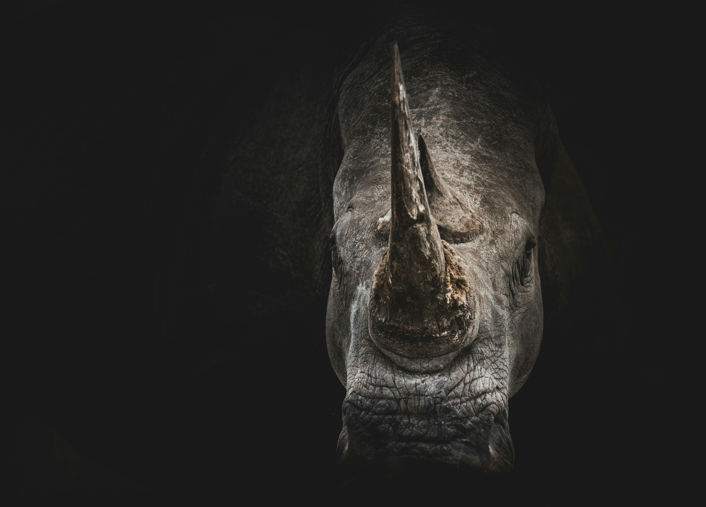
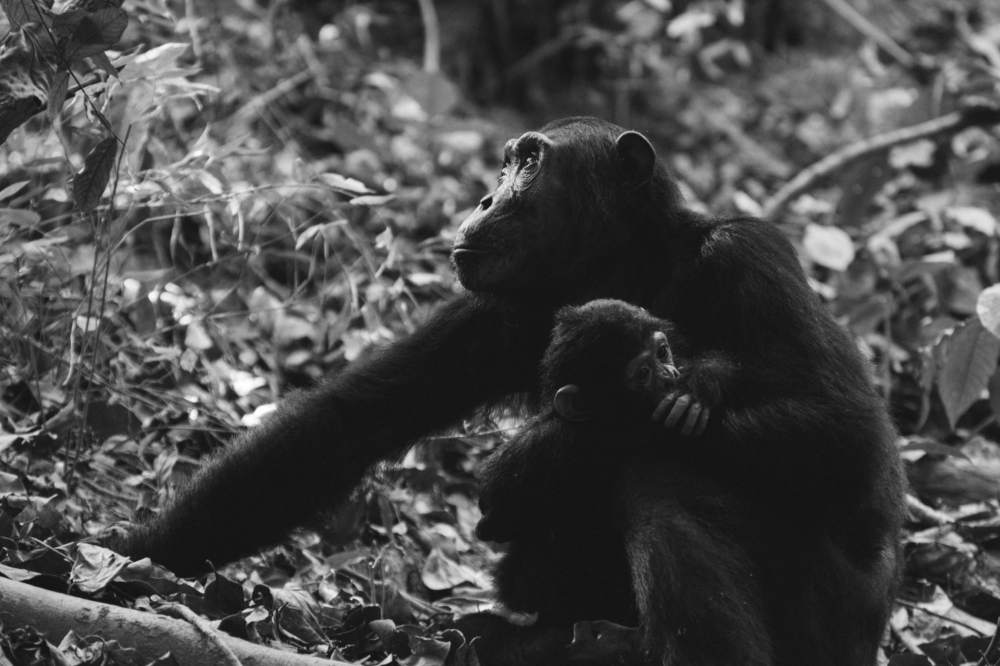

O Tigre de Sumatra (Panthera tigris sumatrae) é uma das menores subespécies de tigre, nativo da ilha de Sumatra, na Indonésia.

Animais em
Extinção
Rinoceronte
O Rinoceronte de Java (Rhinoceros sondaicus) é uma das espécies mais raras do mundo, restrito a fragmentos de habitat na ilha de Java.
Animais em
Extinção
Orangotango
Os orangotangos vivem nas florestas tropicais da Indonésia e da Malásia.

Animais em
Extinção
Gorila
O Gorila-das-montanhas (Gorilla beringei beringei) habita florestas montanhosas da África Central.
Animais em
Extinção
Elefante Asiático
O Elefante-asiático (Elephas maximus) é menor que o Elefante-africano e enfrenta sérias ameaças devido à perda de habitat, conflitos com humanos e caça furtiva por suas presas.
Orangotango
A partir do século XX.
Elefante
Intensificação do declínio a partir do final do século XIX.
Rinoceronte
A partir da década de 1970.
Tigre
Consideração oficial de extinção a partir de 2016.